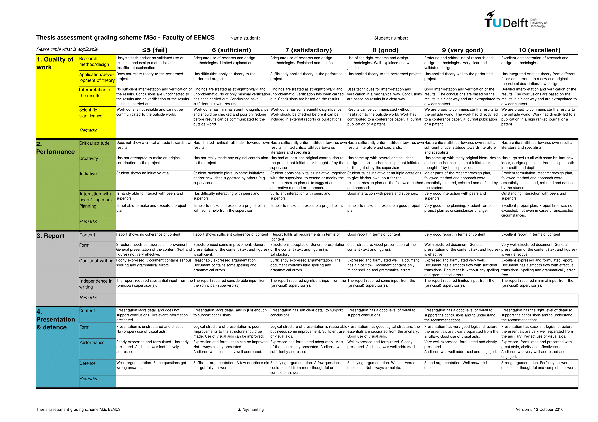

Your Unofficial Guide to Thesis Writing
Writing a thesis at TU Delft is the culmination of your academic journey and represents your ability to conduct independent research. This guide will help you navigate the thesis process from initial planning to final submission, ensuring you meet all requirements and produce high-quality work.
Understanding the Thesis Process
Thesis Overview
A thesis at TU Delft typically represents 45 EC (European Credits) and is conducted over 6-9 months. It demonstrates your ability to:
- Conduct independent research
- Apply theoretical knowledge to practical problems
- Analyze and interpret results
- Communicate findings effectively
- Contribute to your field of study
Thesis Types
| Type | Duration | Credits | Focus |
|---|---|---|---|
| Research Thesis | 6-9 months | 45 EC | Original research contribution |
| Industry Thesis | 6-9 months | 45 EC | Applied research in industry |
Pre-Thesis Preparation
Handle Thesis Admin via MaRe System
MaRe is the official Master Thesis Registration system for all EEMCS MSc programmes at TU Delft. All thesis committee and final examination forms must be submitted via MaRe.
- Register your thesis project in MaRe as soon as you start your graduation process.
- MaRe tracks your project progress, sends automated reminders for important deliverables, and simplifies administrative procedures (such as submitting proposals and committee forms).
- Students enter project details and submit required forms;
- supervisors and support staff monitor progress and approve milestones.
For more information and official instructions, see the Master Formulieren page.
Timeline Planning
6-9 Months Before Start:
- Identify potential supervisors and research areas
- Attend thesis information sessions
- Review faculty-specific requirements
- Prepare your CV and motivation letter
3-4 Months Before Start:
- Contact potential supervisors
- Discuss research proposals
- Secure funding if required
- Complete necessary paperwork
1-2 Months Before Start:
- Finalize supervisor agreement
- Define research scope and objectives
- Set up project timeline
- Prepare workspace and tools
The following timeline is recommended for a 45 EC MSc thesis at TU Delft EEMCS (e.g., Computer Engineering, Telecom, Embedded Systems, Microelectronics) from Start of Thesis:
- Month 0: Update your Individual Exam Programme (IEP) and apply for the Thesis Entrance Permit.
- Month 1: Enroll at your research group (e.g., SPS) using the membership form, define your thesis topic with your advisor, start your literature search, and give a 5-minute starting presentation in the MSc seminar.
- Month 3: Submit the thesis committee form to the exam committee (at least 3 months before your planned graduation date).
- Month 4: Present a 15-minute midterm presentation in the MSc seminar.
- Month 7: Obtain permission ("green light") to defend your thesis, set your graduation date, and submit the final examination request form (at least 6 weeks before your defense).
- Month 8-9: Defend your thesis and receive your MSc diploma!
Tips:
- You are the project leader: take responsibility for progress, reporting, and regular meetings with your advisors.
- Attend MSc midterm seminars and defenses to learn from your peers and improve your own presentation skills.
- Use the official EEMCS graduation policy and timeline to avoid administrative delays.
For more details and forms, see the SPS MSc thesis guidelines and EEMCS Master Formulieren page.
Finding a Supervisor
-
Research Faculty Members
- Browse faculty websites and publications
- Attend research presentations and seminars
- Review recent thesis topics in your field
-
Contact Potential Supervisors
- Send professional emails with your CV
- Include specific research interests
- Mention relevant coursework and experience
- Request meetings to discuss possibilities
-
Prepare for Meetings
- Research the supervisor's work
- Prepare questions about their research
- Bring your academic transcript
- Discuss potential thesis topics
Required Documentation
- Individual Exam Programme (IEP) - Must be approved before starting
- Thesis Agreement - Signed by supervisor and student
- Ethics Approval - If required for your research
- Data Management Plan - For handling research data
- Risk Assessment - For laboratory or field work
Thesis Structure and Requirements
Standard Thesis Structure
1. Title Page
2. Abstract (English and Dutch)
3. Table of Contents
4. List of Figures/Tables
5. Introduction
6. Literature Review
7. Methodology
8. Results
9. Discussion
10. Conclusion
11. Recommendations
12. References
13. Appendices
Page Requirements
| Section | Typical Length | Notes |
|---|---|---|
| Abstract | 250-300 words | In English |
| Introduction | 5-8 pages | Problem statement and objectives |
| Literature Review | 10-15 pages | Critical analysis of existing work |
| Methodology | 8-12 pages | Detailed research approach |
| Results | 15-25 pages | Data presentation and analysis |
| Discussion | 10-15 pages | Interpretation and implications |
| Conclusion | 3-5 pages | Summary and future work |
| Total | 60-80 pages | Excluding appendices |
Formatting Requirements
- Font: Times New Roman or Arial, 12pt
- Line Spacing: 1.5 or double-spaced
- Margins: 2.5 cm on all sides
- Page Numbers: Bottom center
- Language: English (unless otherwise specified)
- File Format: PDF for submission
Research Methodology
Research Design
Quantitative Research:
- Surveys and questionnaires
- Experimental studies
- Statistical analysis
- Data modeling
Qualitative Research:
- Interviews and focus groups
- Case studies
- Content analysis
- Ethnographic studies
Mixed Methods:
- Combination of quantitative and qualitative
- Triangulation of data sources
- Comprehensive analysis
Data Collection Methods
| Method | Advantages | Disadvantages | Best For |
|---|---|---|---|
| Surveys | Large sample size, standardized | Low response rate, limited depth | Quantitative studies |
| Interviews | Rich data, flexibility | Time-consuming, small sample | Qualitative studies |
| Experiments | Control, causality | Artificial setting, ethical concerns | Scientific research |
| Case Studies | Detailed analysis, real context | Limited generalizability | Applied research |
| Literature Review | Comprehensive overview | No new data collection | Theoretical studies |
Data Analysis
Quantitative Analysis:
- Statistical software (SPSS, R, Python)
- Descriptive and inferential statistics
- Regression analysis
- Hypothesis testing
Qualitative Analysis:
- Thematic analysis
- Content analysis
- Grounded theory
- Discourse analysis
Writing Process
Writing Timeline
Month 1-2: Foundation
- Literature review
- Methodology development
- Data collection planning
Month 3-4: Data Collection
- Implement research methods
- Collect and organize data
- Begin preliminary analysis
Month 5-6: Analysis
- Complete data analysis
- Interpret results
- Identify key findings
Month 7-8: Writing
- Write results and discussion
- Complete all chapters
- First draft review
Month 9: Finalization
- Incorporate feedback
- Final editing and proofreading
- Submission preparation
Writing Tips
Getting Started:
- Write daily, even if just notes
- Start with the methodology section
- Use bullet points and outlines
- Don't aim for perfection in first draft
Improving Quality:
- Use clear, concise language
- Avoid jargon and acronyms
- Provide concrete examples
- Support claims with evidence
Common Mistakes to Avoid:
- Procrastination and last-minute writing
- Insufficient literature review
- Weak methodology justification
- Poor data presentation
- Inadequate discussion of limitations
Academic Writing Style
Do:
- Use active voice when appropriate
- Write in third person for formal sections
- Use present tense for established facts
- Use past tense for your research activities
- Be precise and specific
Don't:
- Use informal language or contractions
- Include personal opinions without evidence
- Use vague or ambiguous terms
- Overuse passive voice
- Include unnecessary details
Supervision and Feedback
Working with Your Supervisor
Regular Meetings:
- Schedule weekly or bi-weekly meetings
- Prepare agenda and questions
- Bring progress updates
- Take notes during meetings
Communication:
- Be proactive in communication
- Respond to emails promptly
- Share drafts in advance
- Ask for specific feedback
Managing Feedback:
- Accept constructive criticism
- Ask for clarification when needed
- Implement suggested changes
- Keep track of all feedback
Peer Review and Support
- Study Groups: Form thesis writing groups
- Writing Centers: Use university writing support
- Peer Review: Exchange drafts with classmates
- Online Forums: Join academic writing communities
Quality Assurance
Official TU Delft MSc Grading Rubrics
For the most current and detailed assessment criteria, refer to the official TU Delft MSc Grading Rubrics 2016 document. This official document provides comprehensive evaluation standards used by thesis committees.

Submission and Defense
Pre-Submission Checklist
- All chapters completed and reviewed
- Abstract written
- References properly formatted
- Appendices included
- Plagiarism check completed
- Supervisor approval obtained
- Format requirements met
- Electronic and hard copies ready
Submission Process
- Final Review: Supervisor reviews complete thesis
- Format Check: Ensure all formatting requirements met
- Plagiarism Check: Submit through university system
- Official Submission: Submit to faculty office
- Committee Assignment: Thesis committee formed
- Defense Scheduling: Defense date and time set
Thesis Defense
Presentation Structure:
- Introduction (2-3 minutes)
- Problem statement and objectives (3-4 minutes)
- Methodology (7-8 minutes)
- Results and analysis (9-11 minutes)
- Conclusions and recommendations (3-4 minutes)
- Questions and discussion (15-20 minutes)
Resources and Support
University Resources
- Thesis Manual: Faculty-specific guidelines
- Writing Center: Academic writing support
- Library Services: Research and citation help
- IT Support: Software and technical assistance
- Student Counseling: Mental health and stress management
Software and Tools
Writing and Formatting:
- LaTeX (Overleaf) - Professional document formatting
- Zotero/Mendeley - Reference management
- Grammarly - Grammar and style checking
Research and Analysis:
- SPSS/R/Python - Statistical analysis
- NVivo - Qualitative data analysis
- MATLAB - Mathematical modeling
- Git - Version control for code
Project Management:
- Teams - Task organization
- Notion - Note-taking and organization
- Google Calendar - Timeline management
Online Resources
- TU Delft Repository: Previous thesis examples
- Google Scholar: Academic literature search
- ResearchGate: Academic networking
- arXiv: Preprint papers
- IEEE/ACM Digital Libraries: Technical papers
Success Tips
When to Seek Help
- Academic Support: Writing centers, library services
- Technical Support: IT help, software training
- Mental Health: Student counseling, stress management
- Supervision Issues: Program coordinator, academic advisor
- Personal Issues: Student services, peer support groups
Conclusion
Writing a thesis at TU Delft is a challenging but rewarding experience that demonstrates your academic capabilities and prepares you for future research or professional work. By following this guide, maintaining regular communication with your supervisor, and staying organized throughout the process, you can successfully complete your thesis and contribute valuable knowledge to your field.
Remember that every thesis journey is unique, and it's normal to face challenges along the way. Stay focused on your goals, seek support when needed, and take pride in your academic achievement. Good luck with your thesis!
This guide provides general information about thesis writing at TU Delft. Always refer to your specific faculty guidelines and supervisor requirements for detailed information about your particular thesis requirements.